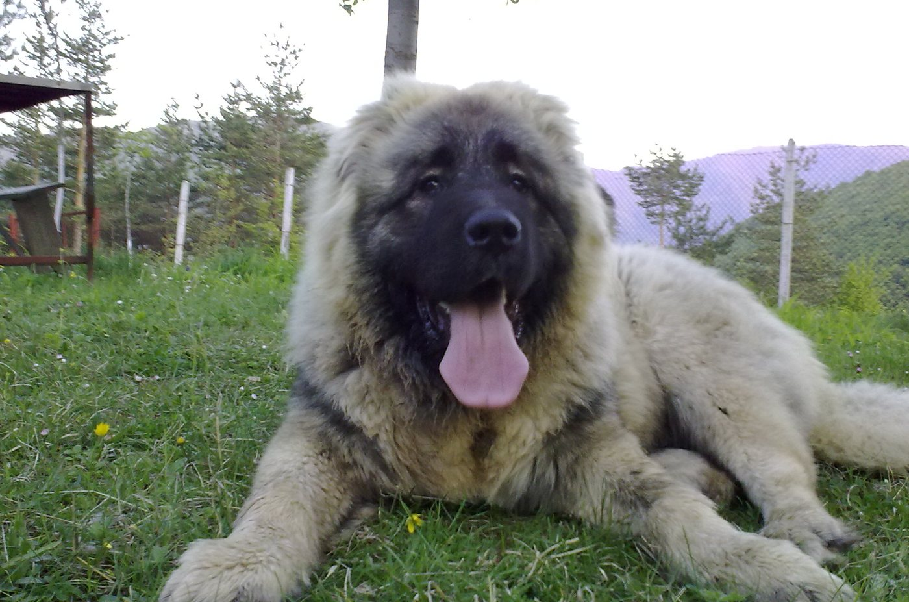
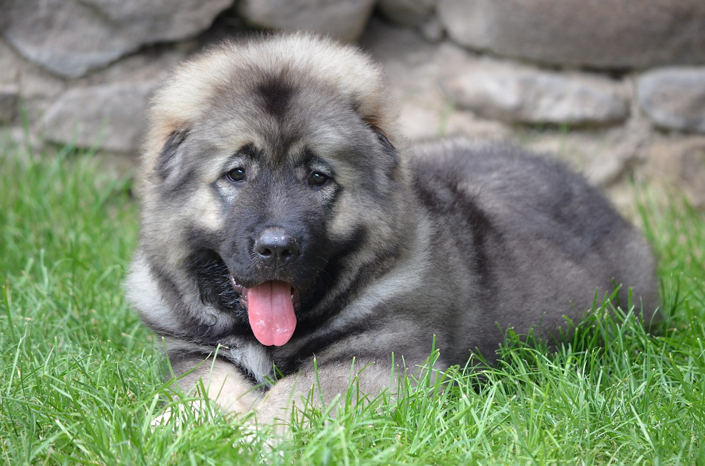
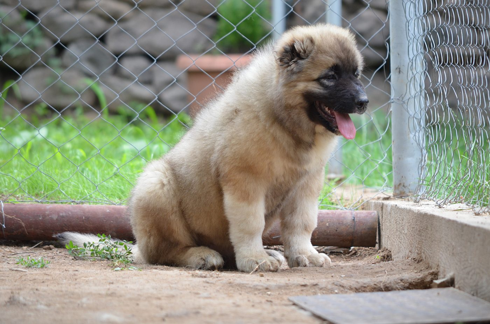

На кафе в развъдника
Когато някой дойде при нас за кученце, не започваме с цената. Първо правим кафе, сядаме в двора и разказваме за породата – какъв е характерът ѝ, как пази, как се привързва и какво изисква.
Искаме да видим дали хората и кавказката овчарка си подхождат. Не стига да имаш пари за кученце – трябват място, време и възможност да отгледаш голямо и мощно куче пазач. Тази страница е част от този разговор.
Произход

Кавказката овчарка произхожда от древните кучета на Кавказ. Векове наред тя пази стадата и домовете на хората в планините на днешните Грузия, Армения, Азербайджан и Дагестан и в степите на Южна Русия – от вълци, мечки и непознати.
Най-ранното споменаване на големи кучета молоси в този край е от I век пр.н.е. – в армията на арменския цар Тигран II. Целенасочената развъдна работа започва в СССР през 20-те години на миналия век. Тогава се отбират точно качествата, които ценим и днес: сила, увереност, безстрашие, остър слух и зрение и гъста, непромокаема козина, с която кучето издържа и в най-суровия климат.
Днес Международната кинологична федерация (FCI) признава породата със стандарт № 328, а страна на стандарта е Русия.
Пазач, който мисли
Кавказката овчарка има славата на свирепо куче. Агресията ѝ обаче има една цел – да пази. Тя е насочена към непознати хора и животни, които влизат там, където не трябва.
Това, което я отличава, е начинът, по който действа. Кавказката не напада сляпо всичко по пътя си. Първо преценява ситуацията и според нея решава какво да направи.
Ако сте навън с вашата кавказка и насреща ви излезе улично куче, тя няма да се втурне към него. Ще застане до вас и ще ви пази, докато другият не нападне пръв. По-малки кучета, които ѝ се зъбят, често просто пренебрегва – не ги приема за заплаха. Главната ѝ цел не е да напада, а вие да сте в безопасност.
Но ако стопанинът ѝ наистина е в опасност, няма по-добър пазач. Тя ще се бие до последно за вас. Кавказката овчарка е цяла охранителна система с огнева мощ, която живее в двора ви.
Стандартът на FCI описва точно това: поведението трябва да е уравновесено, активно, уверено, безстрашно и независимо, с предана привързаност към стопанина. Агресивните или прекалено страхливите кучета не отговарят на стандарта и се дисквалифицират на изложба. Затова, когато е отгледана правилно, кавказката е една от най-уравновесените породи, които познаваме – умее да съчетае спокойствие, преданост, интелигентност и, когато се наложи, сила.
Едно семейство за цял живот

Кавказките се привързват изключително силно. Когато приемат един човек или едно семейство за свои, това е до живот и никой не може да застане между тях.
Затова смяната на собственик е много тежка за тях. Особено възрастен мъжки много трудно, понякога почти невъзможно, приема нов стопанин. Виждали сме кучета, които преживяват подобна промяна тежко – и психически, и физически.
Това е и причината да избираме внимателно на кого даваме кученце. Най-добре е то да дойде у вас малко и да порасне заедно с вашето семейство.
С деца и семейство
Често ни питат дали кавказка може да живее в семейство с деца. Може. Кавказките са умни и много рядко проявяват агресия към деца, дори към непознати. С децата от своето семейство обикновено са спокойни и търпеливи.
Все пак това е голяма и мощна порода, затова винаги бъдете внимателни:
- не оставяйте малки деца сами с кучето;
- внимавайте, когато на гости дойдат чужди деца – шумната игра и боричкането кучето може да приеме като нападение срещу „своите“;
- научете децата да уважават кучето – да не го дърпат и да не му пречат, докато яде или почива.
„Сигурно яде цяла крава“
Това е може би най-честият въпрос, който чуваме. Истината изненадва повечето хора.
При нас голямото възрастно куче се храни веднъж на ден – около 700 г до 1 кг храна. Тя е смес от качествена гранулирана храна и сурово месо по наша рецепта. Подрастващите от 6 месеца до 1 година ядат два пъти на ден, а кученцата до 6 месеца – три пъти на ден.
Едрите кучета с дълбок гръден кош са склонни към усукване на стомаха. Затова не разхождайте кучето и не го оставяйте да тича и да играе около час-два след хранене. Ако предпочитате, дневното количество може да се раздели и на две хранения. А при подрастващото кученце най-важното е да не бъде прехранвано – бързото наддаване натоварва ставите.
Грижи през годината
Кавказката е създадена за студа – снегът е нейният сезон. Жегата е много по-трудна за нея.
- Разходки – през лятото само в хладните часове: рано сутрин или вечер. Не я разхождайте в най-голямата жега.
- Вода и сянка – в големите жеги сменяйте водата често, за да е свежа и хладна, и осигурете сянка в двора.
- Козина – гъста и дълга, затова се реши редовно, за да падне старата козина и на кучето да не му е толкова топло. По време на линеене – всеки ден.
- Здраве – ваксинации, обезпаразитяване и редовни прегледи при ветеринар. Кавказката живее средно 10–12 години.
Възпитание: кой е шефът

Кавказката има твърд характер и е независима – векове наред е взимала решения сама в планината. Затова, докато подраства, трябва да спечелите уважението ѝ и да ѝ покажете, че вие сте шефът.
Това изисква време и търпение, а при някои кучета – и повече усилия. Но спечелите ли веднъж уважението на кавказката, няма връщане назад.
Важна е и ранната социализация – кученцето трябва да опознае хора, звуци и други животни още от малко. Породата съзрява бавно, затова бъдете последователни.
Не е за всеки
Кавказката овчарка изисква внимание, грижа и любов, за да покаже пълния си потенциал. Ако имате двор, време и желание да я отгледате правилно, ще получите приятел и пазач, на когото можете да разчитате до края на живота му.
Не сте сигурни дали е за вас? Елате на кафе – ще поговорим.
| Произход | Кавказ и степите на Южна Русия; стандарт № 328 на FCI, патронаж Русия |
|---|---|
| Предназначение | Пазач и куче охрана |
| Група по FCI | Група 2, секция 2.2 – молоси, планински тип |
| Височина при холката | Мъжки – желателно 72–75 см, минимум 68 см Женски – желателно 67–70 см, минимум 64 см По-висок ръст се допуска при хармонично телосложение |
| Тегло | Мъжки – минимум 50 кг Женски – минимум 45 кг |
| Поведение | Уравновесено, активно, уверено, безстрашно и независимо; агресивните или прекалено страхливите кучета се дисквалифицират |
| Козина | Права, груба и гъста, с добре развит подкосъм – покривният косъм и подкосъмът са поне 5 см; при по-дългата козина мъжките имат изразена грива |
| Цветове | Всеки едноцветен, петнист или пъстър цвят – сиви нюанси, бежово, рижаво, бяло. Не се допускат черно в каквато и да е форма, генетично синьо и кафяво |
| Продължителност на живота | Средно 10–12 години |
Рекорд от нашия развъдник
Най-голямото мъжко куче кавказка овчарка в България е от Kennel Vikas-Dog.
- 116 кгтегло на кантар
- 85 смвисочина при холката
Без излишни килограми – това е масивен, но стегнат и атлетичен мъжкар.
Породата във видео
Вижте как играят нашите кавказки овчарки – видео от YouTube канала на развъдника.
Често задавани въпроси
Колко яде една кавказка овчарка?
Много по-малко, отколкото повечето хора си мислят. При нас голямото възрастно куче се храни веднъж на ден – около 700 г до 1 кг храна, смес от качествена гранулирана храна и сурово месо. Подрастващите от 6 месеца до 1 година ядат два пъти на ден, а кученцата до 6 месеца – три пъти.
Подходяща ли е кавказката за семейство с деца?
Да, ако е отгледана правилно. Кавказките рядко проявяват агресия към деца и с децата от своето семейство са спокойни и търпеливи. Това обаче е голяма и мощна порода, затова никога не оставяйте малки деца сами с кучето и внимавайте, когато на гости дойдат чужди деца.
Агресивна порода ли е кавказката овчарка?
Кавказката е пазач, а не сляп нападател. Тя е недоверчива към непознати хора и животни, но първо преценява ситуацията и напада само ако има реална заплаха. По стандарта на FCI агресивните кучета се дисквалифицират – правилното поведение е уравновесено и уверено.
Може ли кавказка да свикне с нов собственик?
Много трудно. Кавказките се привързват към едно семейство за цял живот, а възрастен мъжки почти никога не приема нов стопанин. Затова е най-добре кученцето да дойде у вас малко и да порасне с вашето семейство.
Как кавказката понася жегата?
Породата е създадена за студ и жегата е трудна за нея. През лятото я разхождайте само в хладните часове, сменяйте водата често, осигурете сянка и решете козината редовно, за да падне старият косъм.
Колко живее кавказката овчарка?
Средно 10–12 години. Добрата храна без прехранване, движението и редовните прегледи при ветеринар помагат кучето да остане здраво по-дълго.
Колко голяма става кавказката овчарка?
По стандарта на FCI желаната височина при холката е 72–75 см за мъжките и 67–70 см за женските, а минималното тегло е 50 и 45 кг. По-висок ръст се допуска, ако кучето е хармонично. Нашият рекордьор е 85 см и 116 кг.